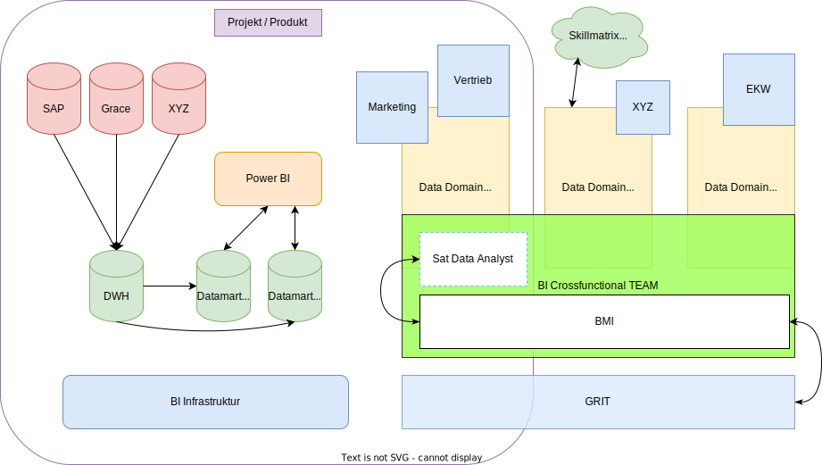

Big Picture

| Tätigkeit |
Satelit |
BMI |
Data Lead |
GRIT |
| Data Vault Modelieriung ZRD |
I,C |
A,R |
- |
C |
| Anbindung neuer Datenquellen |
I,C |
A,R |
- |
R |
| Kappazitätsplanung BMI |
I |
C |
A,R |
I |
| Priorisierung Projekte |
I,C |
C |
A,R |
C |
R wie Responsible
Eine Rolle bzw. ein konkreter Mitarbeiter ist verantwortlich für die Durchführung einer Aktivität; ihr oder ihm obliegt die Durchführungsverantwortung. Responsible kann aber auch bedeuten, dass die Rolle oder der Mitarbeiter die Durchführung “lediglich” initiiert und die Tätigkeiten von anderen Rollen oder Mitarbeitenden übernommen werden. In manchen Fällen wird Responsible auch als disziplinarische Verantwortung verstanden.
A wie Accountable
Eine Rolle bzw. ein konkreter Mitarbeiter ist im kaufmännischen und/oder juristischen Sinne rechenschaftspflichtig. Accountable bedeutet oftmals auch, dass die Rolle oder der Mitarbeiter Projekte freigibt, Aufgaben genehmigt oder Kosten und Rechnungen abzeichnet.
C wie Consulted
Eine Rolle bzw. ein konkreter Mitarbeiter, der zu einer Tätigkeit gehört werden sollte, da sie oder er über Informationen, Kenntnisse oder Erfahrungen verfügt, die zur Umsetzung der Tätigkeit oder Realisierung eines Ergebnisses wichtig sind.
I wie Informed
Eine Rolle bzw. ein konkreter Mitarbeiter, der über eine Tätigkeit informiert werden soll. Hier lässt sich zwischen Informationsrecht (die Rolle bzw. der Mitarbeiter hat das Recht auf Information) und Informationspflicht (die Rolle bzw. der Mitarbeiter muss – evtl. auch zyklisch – über Tätigkeiten oder Ergebnisse und deren Fortschritt informiert werden).
Aus diesen unterschiedlichen Interpretationen lässt sich leicht ableiten, dass jede Organisation, die eine RACI-Matrix nutzt, Einigkeit über die Bedeutung der Begrifflichkeiten und der daraus abgeleitete Konsequenzen gewinnen muss.